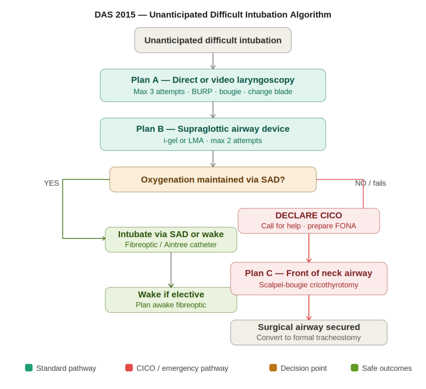
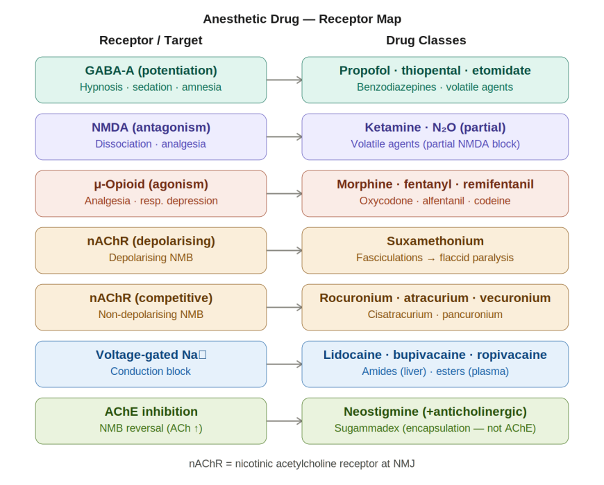
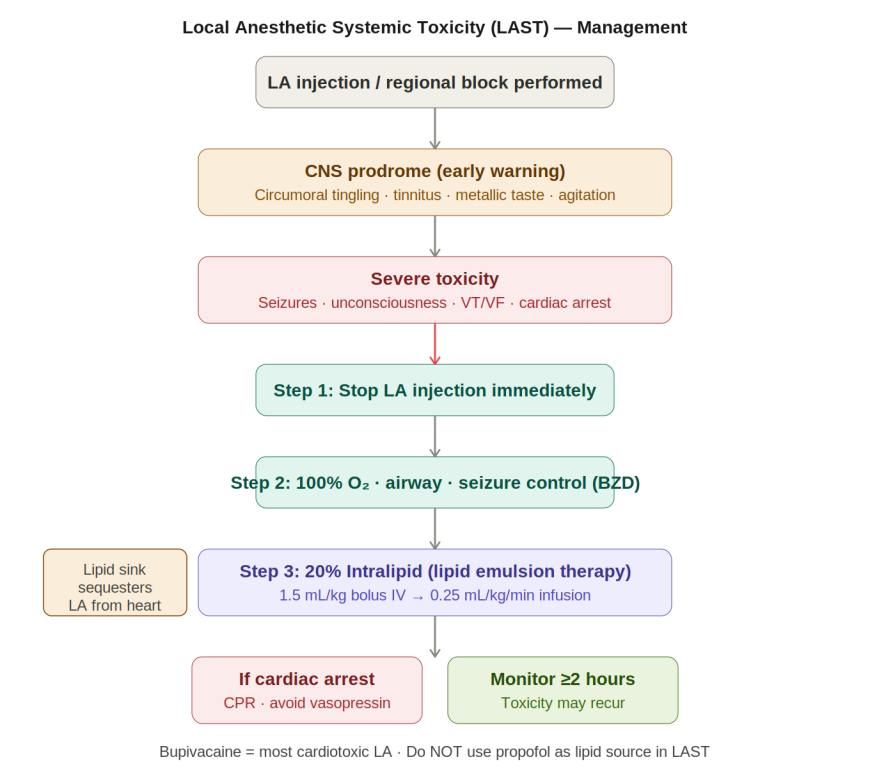
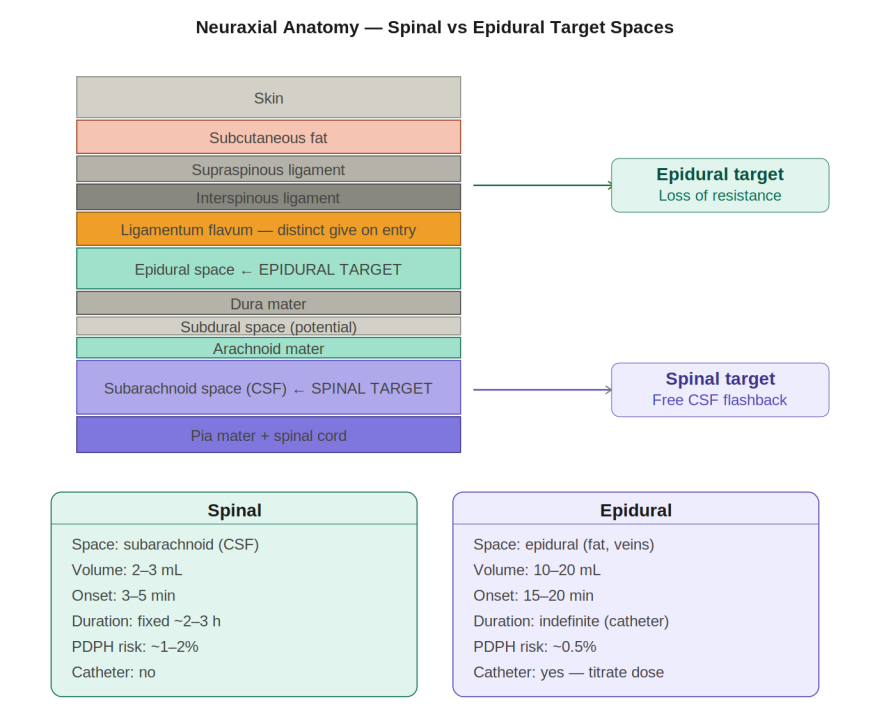
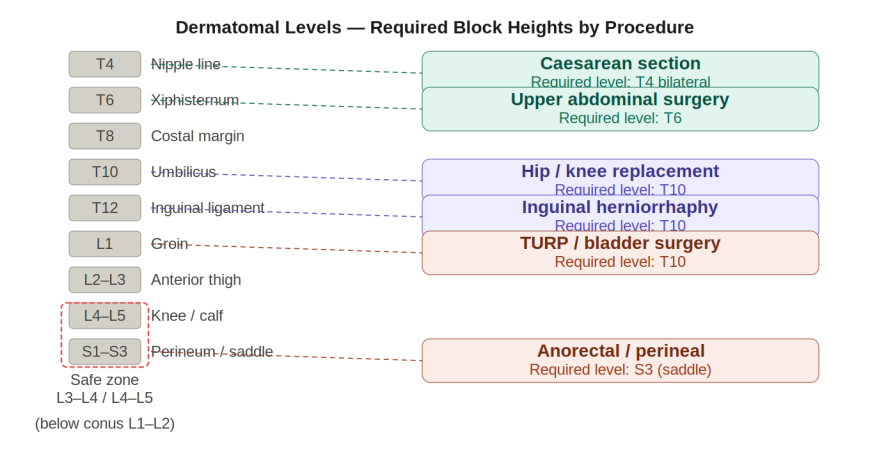
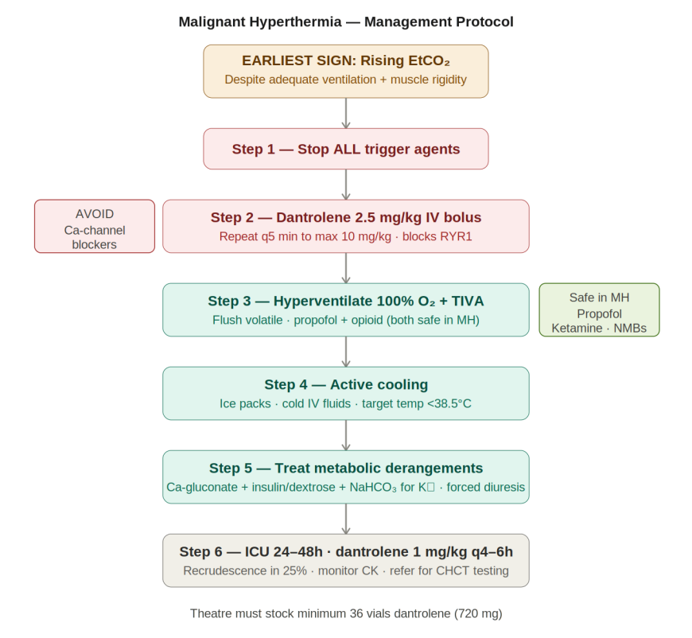
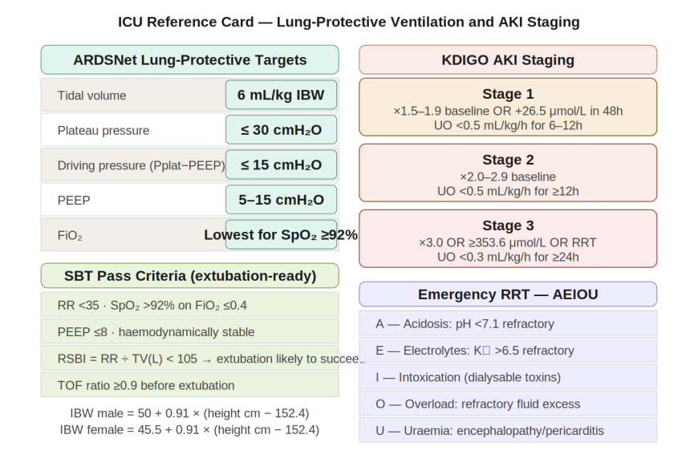
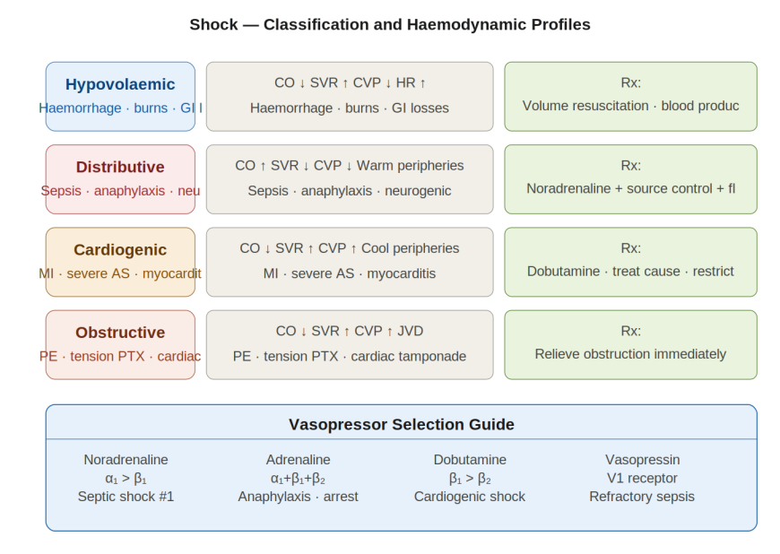
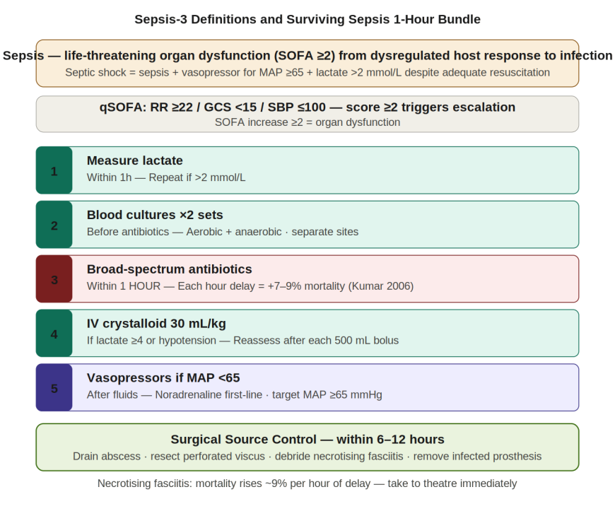

Anesthesia & Perioperative Care
Complete Illustrated Monograph with 10 Embedded Diagrams
This monograph consolidates the essential anesthesia and perioperative care knowledge required for surgical residents. It bridges the gap between pure anesthetic theory and the practical application required on the surgical floor and in the intensive care unit.
Surgical Anatomy
Understanding airway anatomy is not just an intubation requisite; it is the foundation for securing an emergency surgical airway. The cricothyroid membrane is the universal target for emergency front-of-neck access.
- Thyroid cartilage: anterior midline, V-shaped, C4–C5 level.
- Cricoid cartilage: only complete tracheal ring, C6; inferior to thyroid cartilage.
- Cricothyroid membrane (CTM): width ~9 mm, height ~22 mm. The superior cricothyroid arteries cross the UPPER border; therefore, you must incise in the INFERIOR THIRD to avoid massive bleeding.
- Right mainstem bronchus: wider, shorter, more vertical (25° from midline). Preferential right-sided endobronchial intubation occurs if the endotracheal tube is advanced too far.

Airway Assessment: LEMON Score
Airway management relies on predicting difficulty before the patient is apneic. The LEMON score provides a rapid, structured clinical assessment to identify anatomical traits that predict a difficult direct laryngoscopy, allowing the team to prepare adjuncts proactively.
| Letter | Assessment | Difficulty Indicator |
|---|---|---|
| L | Look externally | Short neck, large tongue, retrognathia, obesity |
| E | 3-3-2 rule | <3 fingers mouth opening / <3 hyoid-chin / <2 thyromental distance |
| M | Mallampati | Class III or IV |
| O | Obstruction | Mass, haematoma, Ludwig's angina, foreign body |
| N | Neck mobility | Cervical spine injury, ankylosing spondylitis, post-RT |
Mallampati & Cormack-Lehane
The Mallampati score correlates the size of the tongue to the pharyngeal volume. A higher class predicts a poorer view during laryngoscopy, quantified by the Cormack-Lehane grading system.
| Mallampati Class | Visible Structures | CL Grade | View at Laryngoscopy |
|---|---|---|---|
| I | Soft palate, uvula, fauces, pillars | 1 | Full glottis visible |
| II | Soft palate, uvula, fauces | 2a | Partial glottis visible |
| III | Soft palate, base of uvula | 2b | Arytenoids only |
| IV | Hard palate only | 3/4 | Epiglottis only / nothing |
RSI Step-by-Step
Rapid Sequence Induction (RSI) is designed to minimize the time between the loss of protective airway reflexes and the inflation of the endotracheal tube cuff, mitigating aspiration risk in patients with a full stomach or acute abdomen.
| Step | Action | Key Detail |
|---|---|---|
| 1 | Preoxygenate | 100% O₂ x 3–5 min; SpO₂ target >95%; nasal cannula 15 L/min apnoeic oxygenation |
| 2 | Position | Sniffing position; ear-to-sternal-notch alignment in obese patients |
| 3 | Induction | Propofol 1.5–2 mg/kg (stable) OR ketamine 1–2 mg/kg (haemodynamic instability) |
| 4 | NMB | Suxamethonium 1.5 mg/kg OR rocuronium 1.2 mg/kg (if suxamethonium CI) |
| 5 | Laryngoscopy | Blade tip in vallecula; lift along handle axis; never lever on teeth |
| 6 | Tube | ETT 7.0–7.5 F / 7.5–8.0 M; cuff 20–25 cmH₂O; depth 21 cm F / 23 cm M |
| 7 | Confirm | EtCO₂ waveform (gold standard) + bilateral auscultation |
Safe apnoea time is ~8 min for a healthy adult, but drops to ~2–3 min in obese or pregnant patients. The EtCO₂ waveform is the gold standard for ETT confirmation. No waveform indicates oesophageal placement; pull immediately.

Surgical Cricothyrotomy: Scalpel-Bougie Technique
When intubation fails and oxygenation cannot be maintained, an immediate surgical airway is required. This technique is rapid and relies on simple, universally available equipment.
- Laryngeal handshake: secure the anatomy with thumb and middle finger on the thyroid cartilage; index finger identifies the CTM.
- Vertical skin incision 3–4 cm over CTM to account for bleeding and tissue shift; follow with a horizontal stab through the inferior third of the membrane.
- Dilate the tract; slide a bougie caudally; railroad a cuffed 6.0 ETT over the bougie; confirm EtCO₂ and secure.
- Note: Needle cricothyrotomy provides oxygenation only (CO₂ will accumulate) and is a temporary bridge (max 30 minutes).
Cannot Intubate Cannot Oxygenate (CICO): Hesitation is the leading cause of hypoxic brain injury. Once SpO₂ is falling and both intubation and SAD have failed, cut immediately without further intubation attempts.
Board MCQs
Show Answer
Show Answer
Show Answer
Show Answer
Show Answer
Induction Agents
Induction agent selection is rarely a "one-size-fits-all" decision. The choice must be tailored to the patient's immediate hemodynamic status and physiological reserve. Propofol is standard for elective cases, but ketamine or etomidate are critical in trauma or shock.
| Agent | Dose | Mechanism | CVS Effect | Key Feature |
|---|---|---|---|---|
| Propofol | 1.5–2.5 mg/kg | GABA-A potentiation | MAP ↓ 25–40% | Antiemetic; PRIS >4 mg/kg/h >48h; no analgesia |
| Ketamine | 1–2 mg/kg | NMDA antagonism | HR/BP ↑ | Preferred in haemodynamic instability; bronchodilator; raises ICP/IOP |
| Etomidate | 0.3 mg/kg | GABA-A potentiation | Minimal | Most CVS stable; adrenocortical suppression 24–48h; myoclonus |
| Thiopental | 3–5 mg/kg | Barbiturate GABA-A | BP ↓ | Reduces CMRO₂/ICP; pH 10.8 (necrosis if extravasated) |

Volatile Agents & MAC
Minimum Alveolar Concentration (MAC) measures potency, while the blood:gas partition coefficient dictates the speed of onset and offset (solubility). Agents with low solubility act faster because the blood saturates quickly, transferring the gas to the brain.
| Agent | MAC (%) | Blood:Gas Coeff. | Key Features |
|---|---|---|---|
| Sevoflurane | 2.0 | 0.65 | Smooth induction; paediatric first choice; fast offset; MH trigger |
| Isoflurane | 1.15 | 1.4 | Vasodilation; reduces MAP; MH trigger |
| Desflurane | 6.0 | 0.45 | Fastest onset/offset; airway irritant (not for induction); MH trigger |
| Nitrous oxide | 104 | 0.47 | Cannot provide sole anaesthesia; expands gas cavities; NOT an MH trigger |
| Halothane | 0.75 | 2.4 | Abandoned (hepatitis); sensitises myocardium to catecholamines; MH trigger |
Lower blood:gas partition coefficient = faster onset/offset. Desflurane (0.45) is the fastest. MAC is additive: 0.5 MAC volatile + 0.5 MAC N₂O = 1.0 MAC total. All volatile halogenated agents trigger MH; nitrous oxide is safe.
NMBs & Reversal
Neuromuscular blocking agents are categorized into depolarizing (suxamethonium) and non-depolarizing classes. The advent of Sugammadex has revolutionized the use of rocuronium, allowing rapid, complete reversal even in CICO situations where profound paralysis must be aborted immediately.
| Agent | Onset | Duration | Reversal | Notes |
|---|---|---|---|---|
| Suxamethonium (depol.) | 45–60 sec | 8–12 min | None (pseudocholinesterase) | Fastest; K⁺ ↑; contraindicated in burns >24h, crush, denervation, MH, pseudocholinesterase deficiency |
| Rocuronium | 60–90 sec (RSI 1.2 mg/kg) | 30–60 min | Sugammadex 16 mg/kg | Only NMB reversible at full block |
| Atracurium | 3–5 min | 25–35 min | Neostigmine | Hofmann elimination; renal/hepatic failure safe; histamine release |
| Cisatracurium | 5–7 min | 40–60 min | Neostigmine | Hofmann elimination; less histamine; ICU preferred |
A TOF ratio ≥0.9 is strictly required before extubation. Sugammadex doses: 2 mg/kg (moderate) / 4 mg/kg (deep) / 16 mg/kg (immediate reversal of RSI dose). Neostigmine cannot reverse a deep block; it requires a minimum TOF ≥0.4.
Local Anesthetics & LAST
Local anesthetics are the cornerstone of regional anesthesia. However, intravascular injection or rapid absorption leads to Local Anesthetic Systemic Toxicity (LAST). Management has radically shifted from pure supportive care to immediate lipid emulsion therapy to sequester the drug.
| Agent | Class | Max Plain | Max + Adrenaline | Key Feature |
|---|---|---|---|---|
| Lidocaine | Amide | 3 mg/kg | 7 mg/kg | Fastest onset; topical airway; IV antiarrhythmic |
| Bupivacaine | Amide | 2 mg/kg | 2.5 mg/kg | Most cardiotoxic — R-enantiomer blocks cardiac Na⁺/K⁺ channels heavily |
| Ropivacaine | Amide | 3 mg/kg | 4 mg/kg | Less cardiotoxic; motor-sparing at low concentrations |
| Levobupivacaine | Amide | 2.5 mg/kg | 3 mg/kg | L-enantiomer; safer cardiovascular profile than racemic bupivacaine |

In LAST management, do not use propofol as the lipid source. The lipid concentration is insufficient for a sink effect, and propofol's profound cardiovascular depressant properties will catastrophically compound the toxicity.
Board MCQs
Show Answer
Show Answer
Show Answer
Show Answer
Show Answer
Show Answer
Neuraxial Anatomy
Understanding the anatomical boundaries and landmarks of the spine is vital for safe neuraxial procedures. A meticulous step-by-step approach ensures accurate placement while minimizing the risk of inadvertent dural puncture or cord injury.
- Layers: skin → subcutaneous fat → supraspinous → interspinous → ligamentum flavum (Loss of Resistance point) → epidural space → dura → subdural (potential) → arachnoid → subarachnoid (CSF) → pia mater.
- Conus medullaris: Ends at L1–L2 in adults (L3 in neonates). Safe insertion is restricted to L3–L4 or L4–L5.
- Tuffier's line (intercristal line) reliably crosses L4, serving as a standard bedside landmark.

Spinal vs Epidural
The choice between a spinal and an epidural depends on the surgical duration, required density of the block, and the need for post-operative analgesia. A spinal provides a rapid, dense, but duration-limited block, whereas an epidural offers titratable, continuous anesthesia.
| Feature | Spinal | Epidural |
|---|---|---|
| Target space | Subarachnoid (CSF) | Epidural (fat, veins) |
| Drug volume | 2–3 mL | 10–20 mL bolus |
| Onset | 3–5 min | 15–20 min |
| Duration | Fixed ~2–3 h | Indefinite (catheter) |
| PDPH risk | ~1–2% (pencil-point) | ~0.5% (inadvertent) |
| Titratability | None after injection | Yes (incremental dosing) |

Dermatomal Requirements
To completely abolish the autonomic and visceral pain responses associated with surgery, the neuraxial block must reach specific dermatomal levels correlated to the innervated organ.
| Dermatome | Landmark | Procedure |
|---|---|---|
| T4 | Nipple line | Caesarean section (bilateral T4 required to block uterine sensation completely) |
| T6 | Xiphisternum | Upper abdominal surgery |
| T10 | Umbilicus | Hip/knee replacement, inguinal herniorrhaphy, TURP |
| S1–S3 | Perineum / saddle | Anorectal / perineal surgery |
ASRA Anticoagulation Guidelines
Neuraxial blocks in anticoagulated patients risk devastating epidural hematomas. The ASRA guidelines define strict time intervals between drug administration and neuraxial intervention, ensuring coagulation has normalized.
| Agent | Wait Before Block | Wait After Catheter Removal |
|---|---|---|
| UFH prophylactic | 4–6 hours | 1 hour |
| LMWH prophylactic (40 mg OD) | 12 hours | 12 hours |
| LMWH therapeutic (1 mg/kg BD) | 24 hours | 24 hours |
| Warfarin | INR ≤1.4 | After removal |
| Clopidogrel | 7 days | After removal |
| Aspirin | No delay | — |
| DOACs (rivaroxaban, apixaban) | 72 hours | 6 hours after removal |
Epidural haematoma presents as back pain accompanied by progressive lower limb weakness post-neuraxial placement. This is a surgical emergency requiring MRI and neurosurgical decompression within 6–8 hours to save spinal cord function.
ASA Physical Status & Sedation Spectrum
The ASA Physical Status classification is the universal language for communicating perioperative risk. It concisely summarizes a patient's baseline physiological reserve before surgical stress is applied.
| ASA Class | Description | Periop Mortality | Example |
|---|---|---|---|
| I | Normal healthy | <0.1% | Young fit adult |
| II | Mild systemic disease | 0.1–0.2% | Well-controlled HTN/DM, BMI 30–40, smoker |
| III | Severe systemic disease | 1.8–4.3% | Poorly controlled DM, COPD, morbid obesity |
| IV | Constant threat to life | 7.8–23% | Recent MI, decompensated HF, sepsis |
| V | Moribund | Up to 51% | Ruptured AAA, massive PE |
| E suffix | Emergency modifier | Adds risk | Applied to any class to denote emergent status |
Sedation levels can deepen unpredictably during a procedure. Rescue preparation must always match the intended level PLUS one level deeper. If you are planning moderate sedation, you must prepare for deep sedation and GA rescue.
Board MCQs
Show Answer
Show Answer
Show Answer
Show Answer
Show Answer
Malignant Hyperthermia (MH)
Malignant Hyperthermia is a rare but catastrophic pharmacogenetic disorder causing a hypermetabolic crisis. For the surgical team, survival hinges entirely on early recognition—specifically identifying a rising EtCO₂ before overt hyperthermia develops.
| Feature | Detail |
|---|---|
| Gene | RYR1 (ryanodine receptor 1); chromosome 19; autosomal dominant |
| Triggers | ALL volatile halogenated agents (sevo, iso, des, halothane) + suxamethonium |
| Safe agents | Propofol, ketamine, all non-depolarising NMBs, nitrous oxide, all local anesthetics |
| EARLIEST sign | Rising EtCO₂ despite adequate ventilation. NOT temperature (temperature rise is LATE) |
| Other features | Muscle rigidity (masseter spasm), tachycardia, temperature >1°C/5 min, rhabdomyolysis, DIC |

NEVER give calcium channel blockers with dantrolene. It causes severe hyperkalaemia and cardiovascular collapse. Use amiodarone for MH-associated arrhythmias.
MH vs Serotonin Syndrome vs NMS
When a patient presents with rigidity and hyperthermia, differentiating the causative syndrome directs the antidote. MH occurs rapidly in the OR, whereas Serotonin Syndrome and NMS have different pharmacological triggers and clinical timelines.
| Feature | Malignant Hyperthermia | Serotonin Syndrome | NMS |
|---|---|---|---|
| Trigger | Volatile agents + suxamethonium | SSRIs, MAOIs, tramadol | Haloperidol, metoclopramide |
| Onset | Minutes (intraoperative) | Minutes to hours | Hours to days |
| Rigidity | Generalised, severe | Clonus > rigidity | Lead-pipe rigidity |
| CK | Massively elevated | Mildly elevated | Markedly elevated |
| Specific Rx | Dantrolene | Cyproheptadine; BZDs | Bromocriptine; dantrolene |
Anaphylaxis
Perioperative anaphylaxis often presents abruptly with profound hypotension, bronchospasm, and absent skin signs initially (due to surgical draping). Neuromuscular blockers are the leading culprits. Immediate administration of adrenaline is the undisputed first-line treatment.
| Feature | Detail |
|---|---|
| Common triggers | NMBs (rocuronium, suxamethonium) > antibiotics > latex > chlorhexidine |
| First-line Rx | Adrenaline. IV 50 mcg boluses; IM 0.5 mg (1:1000) if no IV access |
| Secondary agents | Chlorphenamine 10 mg IV; hydrocortisone 200 mg IV; crystalloid 500–1000 mL |
| Tryptase sampling | 3 samples: 1–2h (peak), 4–6h (declining), 24h (baseline) |
| Biphasic reaction | Recurrence 4–12h in up to 23%. Admit all patients minimum 12–24h |
PONV — Apfel Score
Postoperative Nausea and Vomiting (PONV) is a primary driver of delayed recovery and unplanned hospital admissions. The Apfel score quantifies risk, allowing for a structured, multi-modal prophylactic approach.
| Apfel Score | PONV Risk | Minimum Prophylaxis |
|---|---|---|
| 0 | ~10% | No routine prophylaxis |
| 1 | ~20% | 1 agent (ondansetron 4 mg) |
| 2 | ~40% | 2 agents |
| 3 | ~60% | 3 agents + consider TIVA |
| 4 | ~80% | 3 agents + TIVA + opioid minimisation |
Apfel factors (1 pt each): female sex / non-smoker / history of PONV or motion sickness / postoperative opioid use.
Agents: dexamethasone 8 mg at INDUCTION + ondansetron 4 mg at END of surgery + droperidol 0.625–1.25 mg.
Dexamethasone should be administered at induction. This ensures its peak anti-PONV effect perfectly aligns with the recovery period when the patient is waking up. Giving it at the end of surgery is a common exam trap.
Board MCQs
Show Answer
Show Answer
Show Answer
Show Answer
Show Answer
Mechanical Ventilation
Surgical intensive care relies heavily on strict adherence to lung-protective ventilation targets. Deviating from these parameters drastically increases the risk of iatrogenic barotrauma and ARDS mortality.
| Parameter | Target | Rationale |
|---|---|---|
| Tidal volume | 6 mL/kg IBW | Prevents volutrauma; reduces ARDS mortality (ARDSNet NEJM 2000) |
| Plateau pressure | ≤30 cmH₂O | Prevents barotrauma |
| Driving pressure (Pplat − PEEP) | ≤15 cmH₂O | Strongest independent ARDS mortality predictor (Amato 2015) |
| PEEP | 5–15 cmH₂O | Recruits atelectatic alveoli |
| FiO₂ | Lowest for SpO₂ ≥92% | Prevents oxygen toxicity |
IBW: male = 50 + 0.91 × (height cm − 152.4) | female = 45.5 + 0.91 × (height cm − 152.4).

Driving pressure = Plateau pressure − PEEP. A patient on TV 560 mL with an Ideal Body Weight (IBW) of 70 kg equates to 8 mL/kg. Reduce the TV to 420 mL (6 mL/kg IBW) immediately. This single adjustment directly reduces ARDS mortality.
Shock Classification
The clinical presentation of shock dictates specific therapeutic pathways. Framing shock through its hemodynamic profile (CO, SVR, CVP) immediately clarifies whether the patient requires fluid, vasopressors, or inotropes.
| Type | CO | SVR | CVP | First-Line Rx |
|---|---|---|---|---|
| Hypovolaemic | Low | High | Low | Volume resuscitation; blood products; source control |
| Distributive (septic) | High (early) | Low | Low/normal | Noradrenaline + source control + fluids |
| Cardiogenic | Low | High | High | Dobutamine; treat cause; restrict fluids |
| Obstructive | Low | High | High | Relieve obstruction immediately |

Sepsis
Sepsis management demands urgency. The definitions rely on identifying organ dysfunction, while the operational bundle hinges on delivering broad-spectrum antibiotics within 1 hour and achieving surgical source control within 6-12 hours.
| Term | Definition |
|---|---|
| Sepsis | Life-threatening organ dysfunction (SOFA ≥2) from dysregulated host response to infection |
| Septic shock | Sepsis + vasopressor for MAP ≥65 + lactate >2 mmol/L despite adequate resuscitation |
| qSOFA | RR ≥22 / GCS <15 / SBP ≤100. Score ≥2 triggers escalation |

Necrotising fasciitis: mortality rises ~9% per hour of delay in surgical debridement. CT confirms but must NEVER delay the knife when clinical suspicion is high.
AKI — KDIGO Staging
Acute Kidney Injury grading alerts the team to impending renal failure, guiding fluid management and the threshold for initiating Renal Replacement Therapy (RRT).
| Stage | Creatinine Criterion | Urine Output Criterion |
|---|---|---|
| 1 | ×1.5–1.9 baseline OR rise ≥26.5 μmol/L in 48h | <0.5 mL/kg/h for 6–12h |
| 2 | ×2.0–2.9 baseline | <0.5 mL/kg/h for ≥12h |
| 3 | ×3.0 OR ≥353.6 μmol/L OR RRT initiated | <0.3 mL/kg/h for ≥24h OR anuria ≥12h |
Emergency RRT indications (AEIOU): Acidosis pH <7.1 / Electrolytes K⁺ >6.5 / Intoxication (dialysable) / Overload (refractory) / Uraemia (encephalopathy, pericarditis).
Nutrition & Electrolytes
Providing early, balanced nutrition preserves gut integrity. However, rapid reintroduction of calories in starved patients precipitates profound intracellular electrolyte shifts.
| Feature | Enteral (EN) | Parenteral (PN) |
|---|---|---|
| Start timing | Within 24–48h of ICU admission | After 3–5 days failed EN |
| Gut preservation | Yes | No |
| Infection risk | Low | High (catheter BSI) |
| Target | 25–30 kcal/kg/day; 1.2–2.0 g/kg/day protein | Same targets |
Refeeding syndrome: commencing nutrition after prolonged starvation drives phosphate, K⁺, and Mg²⁺ intracellularly. This causes profound hypophosphataemia, rapidly leading to respiratory muscle failure and an inability to wean from the ventilator. Monitor electrolytes daily upon feeding initiation.
| Electrolyte | Abnormality | Key Cause | Treatment |
|---|---|---|---|
| Na⁺ | Hyponatraemia <135 | SIADH, excess hypotonic IV fluids | Fluid restrict; hypertonic saline if severe; correct ≤10 mEq/L/24h |
| K⁺ | Hypokalaemia <3.5 | NG drainage, diuretics | IV KCl ≤10–20 mEq/h; replace Mg²⁺ simultaneously |
| K⁺ | Hyperkalaemia >5.5 | AKI, rhabdomyolysis, ACEi | Ca-gluconate; insulin/dextrose; salbutamol; dialysis |
| Ca²⁺ | Hypocalcaemia | Post-thyroidectomy, pancreatitis | IV calcium gluconate 10 mL 10%; oral Ca + vit D (chronic) |
| Phosphate | Hypophosphataemia | Refeeding syndrome, DKA treatment | IV sodium/potassium phosphate |
Board MCQs
Show Answer
Show Answer
Show Answer
Show Answer
Show Answer
Show Answer
Quick Reference — Critical Numbers & Doses
| Drug / Parameter | Value | Context |
|---|---|---|
| Suxamethonium RSI | 1.5 mg/kg IV | Onset 45–60 sec; CI: burns >24h, crush, denervation, MH, pseudocholinesterase deficiency |
| Rocuronium RSI | 1.2 mg/kg IV | Onset 60–90 sec; reversible with sugammadex 16 mg/kg |
| Sugammadex (moderate) | 2 mg/kg | TOF ratio detectable |
| Sugammadex (deep) | 4 mg/kg | 1–2 twitches on TOF |
| Sugammadex (RSI reversal) | 16 mg/kg | Immediate reversal of full RSI rocuronium dose |
| Dantrolene (MH) | 2.5 mg/kg IV q5min → max 10 mg/kg | Only specific MH treatment; blocks RYR1; theatre stock min 36 vials = 720 mg |
| Intralipid (LAST) | 1.5 mL/kg IV bolus → 0.25 mL/kg/min | 20% lipid emulsion; lipid sink mechanism; NOT propofol |
| Adrenaline (anaphylaxis) | 50 mcg IV boluses OR IM 0.5 mg (1:1000) | Always first-line; antihistamines/steroids are secondary |
| Bupivacaine max (plain) | 2 mg/kg | Most cardiotoxic LA |
| Lidocaine max (+adrenaline) | 7 mg/kg | Fastest onset LA |
| TOF ratio for extubation | ≥0.9 | <0.9 = residual NMB → aspiration/hypoxia risk |
| ARDSNet TV | 6 mL/kg IBW (not actual body weight) | Reduces ARDS mortality (ARDSNet NEJM 2000) |
| Driving pressure | ≤15 cmH₂O (Pplat − PEEP) | Strongest independent ARDS mortality predictor |
| MAP target (septic shock) | ≥65 mmHg | Noradrenaline first-line vasopressor |
| Antibiotic timing (sepsis) | Within 1 hour | Each hour delay = +7–9% mortality |
| CTM height/width | ~22 mm / ~9 mm | Incise inferior third only |
| ETT depth at teeth | 21 cm F / 23 cm M | Verify with CXR |
| Safe apnoea time | ~8 min (healthy) / 2–3 min (obese/pregnant) | After optimal preoxygenation |
| RSBI for extubation | <105 (RR ÷ TV in litres) | Predicts SBT success |
| T4 dermatome | Nipple line | Required block level for Caesarean section |
| T10 dermatome | Umbilicus | Required for hip/knee replacement, inguinal herniorrhaphy |
| RASS target (ventilated ICU) | −1 to 0 (light sedation) | Deep sedation increases delirium and mortality |
| Apfel score ≥3 | 3-drug PONV prophylaxis + TIVA | Dexamethasone at INDUCTION; ondansetron at END |